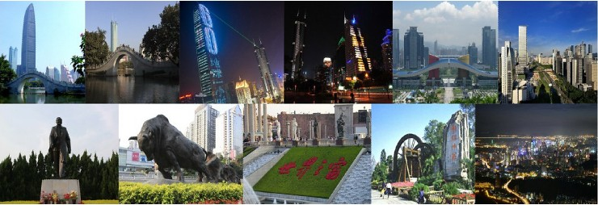

Programme

Download: Program 
Opening Ceremony
Time: 8:30-9:00, Tuesday 22 April 2014
Location: A503
Session chair: Yanchun Zhang
Keynote speech1
Location: A503
Time: 9:00-9:40, Tuesday 22 April 2014
- Polymer Biomaterial for Health
Prof. Robert Howard Grubbs
Nobel Laureate, Victor and Elizabeth Atkins Professor of Chemistry at the California Institute of Technology, USA
Keynote speech2
Location: A503
Time: 9:45-10:30, Tuesday 22 April 2014
- Imaging, Image Guided Therapy, and Beyond
Prof. Xing Lei
Jacob Haimson Professor, Director of Physics Division Diplomate, American Board of Radiology. Department of Radiation Oncology, Stanford University School of Medicine, USA
Oral Session 1-1
Location: A503
Time: 10:45-12:05, Tuesday 22 April 2014
Chair: Jing He
- Machine beauty – should it inspire eHealth designers?
MarjoRissanen
- Water molecules diffusion in diffusion weighted imaging
Fan Zhang, Zhiwei Cao, Xinhong Zhan, Kui Cao
- Mean Shift Based Feature Points Selection Algorithm of DSA Images
Fan Zhang, Congcong Li, Shan Kong, Shuyue Liu, Yanbin Cui
Oral Session 1-2
Location: A601
Time: 10:45-12:05, Tuesday 22 April 2014
Chair: Hai Liu
- Numerical evaluation the effectiveness of the air chamber of shoes pad for diabetes with FE-SPH method
Linan Zhang, Zaobing Xu, ZengtaoHou, XuelingBai,Peng Shang
- Effect of suture density on the dynamic behavior of the bioprosthetic heart valve: a numerical simulation study
Xin Ye, Linan Zhang, Zaobing Xu, ZengtaoHou, XuelingBai, Peng Shang
- A Comfortable THz Source for Biological Effect
Huafeng Shi, Bin Yang, Wenlong Yu, Lei Jin
- A Study on the Nonlinearity Relationship between Quadriceps Thickness and Torque Output during Isometric Knee Extension
Xing Chen, Xin Chen, Jizhou Li, Yongjin Zhou
Oral Session 2-1
Location: A503
Time: 13:30-15:30, Tuesday 22 April 2014
Chair: XiaoXia Yin
- A Comparative Study of Improvements Filter Methods Bring on Feature Selection Using Microarray Data
Yingying Wang, Xiaomao Fan, YunpengCai
- Real-Time Estimation of Tibialis Anterior Muscle Thickness from Dysfunctional Lower Limbs using Sonography
Li Xiaolong, Zhou Yongjin, Li Jizhou, Li Huihui, Tan Jianhao
- An Analysis on Risk Factors of Chronics Diseases Based on GRI
ZhuoyuanZheng, Ye Li, YunpengCai
- A prosthesis control system based on the combination of speech and sEMG signals and its performance assessment
Zheng Wei, Peng Fang, LanTian, QifangZhuo, Guanglin Li
- Detecting Adolescent Psychological Pressures from Micro-Blog
YuanyuanXue, Qi Li
Oral Session 2-2
Location: A601
Time: 13:30-15:30, Tuesday 22 April 2014
Chair: Xiaohui Hu
- Detecting Abnormal Patterns of Daily Activities for the elderly Living Alone
Tingzhi Zhao, Hongbo Ni, Xingshe Zhou, Qiang Lin, Daqing Zhang, Zhiwen Yu
- Detecting Noun Phrases in Biomedical Terminologies: the first step in managing the evolution of knowledge
AdilaMerabti, Lina F. Soualmia, Stéfan J Darmoni
- Color-coded Imaging with Adaptive Multiscale Spatial Filtering
Xinhong Zhang, Xiaopan Chen, Congcong Li, Fan Zhang
- An Architecture and A Platform for Recording & Replaying the Healthcare Information
Yi Ding, JiGeng, Zhe Xiao, Zhiguang Qin
- Design and Development of a 3-lead ECG System Based on the ISO/IEEE 11073-10406 Standards
ZhuqingXiong, Honghui Fan, Weizhong Wang, GaoshengXie, Bangyu Hwang
Oral Session 3-1
Location: A503
Time: 16:00-18:00, Tuesday 22 April 2014
Chair: Yanchun Zhang
- Data Integration in a Clinical Environment using the Global-as-Local-View-Extension Technique
GeorgiStraube, IlvioBruder, DortjeLoeper, Andreas Heuer
- Fall Detection with the Optimal Feature Vectors Based on Support Vector Machine
Zhang Jing, Li Huiqi, Zhao Guoru
- Pre-impact & Impact Detection of Falls Using Built-In Tri-Accelerometer of Smartphone
Liyu Mao, Yunkun Ning, Guoru Zhao
- Portable Assessment of Emotional Status and Support System
Pei-Ching Yang
- Mining Order-Preserving Submatrices Based on Frequent Sequential Pattern Mining
Yun Xue, YutingLi, Zhengling Liao
Oral Session 3-2
Location: A601
Time: 16:00-18:00, Tuesday 22 April 2014
Chair: Jing He
- Unsupervised Segmentation of Blood Vessels From Colour Retinal Fundus Images
Xiaoxia Yin
- Mobile Graphic-based Communication: Investigating Reminder Notifications to Support Tuberculosis Treatment in Africa
Haji Ali, Hussein Suleman, Ulrike Rivett
- Research on applications of Multi-Agent System based on Execution Engine in Clinical Decision-making
Zhenzhen Yan, Liang Xiao, Jianzhou Liu, Yumin Hu, Qiuju Wei, Xusong Liu, Xing Liu
- Multi-Agent Based Clinical Knowledge Representation with Its Dynamic Parse and Execution
Yumin Hu, Liang Xiao, Xing Liu, Jianzhou Liu, Zhenzhen Yan, Qiuju Wei, Haifeng Chen
- Multiscale geometric active contour model and boundary extraction in kidney MR images
Ling Li
- Discovering New Analytical Methods for Large Volume Medical and Online Data Processing
HaoLan Zhang, RoozbehZarei, Chaoyi Pang and Xiaohui Hu
Session Chair: Lei Wang
Best paper Prize
Time: 8:30-8:45, Wednesday 23 April 2014
Keynote speech3
Location: A503
Time: 8:45-9:30, Wednesday 23 April 2014
-Trends in eHealth: implications for Cooperation in technology-health research, commercialization and applications
Prof. Kendall Ho, MD, FRCPC
Director, eHealth Strategy Office, Department of Emergency Medicine, The University of British Columbia, Canada
Keynote speech4
Location: A503
Time: 9:30-10:15, Wednesday 23 April 2014
- Medical Big Data: Medical Data Mining and Innovative Applications
Prof. Yanchun Zhang
Director, Centre for Applied Informatics, Victoria University, Australia
Oral Session 4-1
Location: A503
Time: 10:30-12:10, Wednesday 23 April 2014
Chair: Fengfeng Zhou
- Pre-hospital trauma assessment by combining multiple trauma scoring systems
Guilan Kong, Xiaofeng Yin, Tianbing Wang, Baoguo Jiang
- Evidence of, and contextual factors responsible for, resistance to anti-malarial drugs in Bangladesh
Nazrul Islam, Shan Jiang, StefanosBonovas, Georgios K. Nikolopoulos
- The research of web service in Intelligence medical diagnostic system based on multi-agent
Qiuju Wei, Liang Xiao, Xing Liu, Zhenzhen Yan, Yumin Hu, Jianzhou Liu
- A Probe into the Status and Performance of eHealth in Bangladesh: A Case Study
Arup Barua
- Research on health information and health service administration
Yuhong Su
- An ontology-based healthcare services infrastructure in mobile cloud environment
Hai Liu, Yong Tang, Chen Qimai